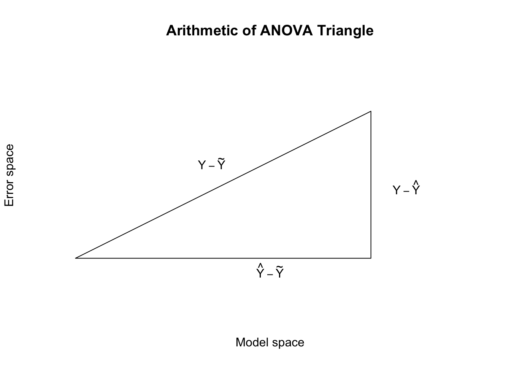
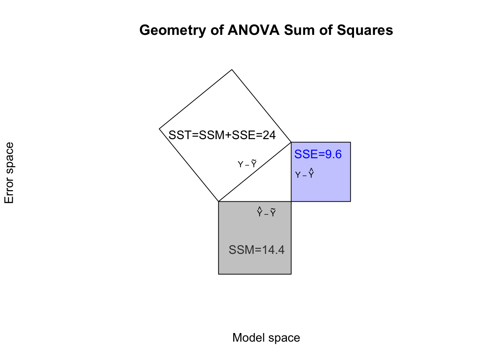

Most of these notes concern Maximum Likelihood theory, but I’d like to briefly return to the Least Squares interpretation. We saw previously that the Least Squares method identifies the line-of-best-fit by minimizing the residual sum of squares (RSS), which is also sometimes called the sum of squared errors (SSE).1
Just as the Maximum Likelihood approach allowed us to construct \(t\)-tests and confidence intervals, the Least Squares interpretation suggests a powerful tool of its own, which I will call variance decomposition. Before I explain this tool, let me explain the problem that it will solve.
Likelihood theory allows us to say whether one set of estimates for \(\boldsymbol{\beta}\) is better or worse than another. It even allows us to find the best estimates for \(\boldsymbol{\beta}\). But these are all relative measures: likelihood theory cannot tell us if the best fitting line is actually any good, in an absolute sense. What use is the best model if it’s still a bad model? How can we measure model performance on an absolute scale?
In the sections above, I’ve already shown metrics of predictive accuracy such as mean absolute error (MAE) and root mean squared error (RMSE):
These metrics are very dependent on the scale of the data and the natural variance of the response variable \(Y\). If I compute a model RMSE of 5, or a model MAE of 6000, I still don’t know whether these numbers are impressive or useful until I better understand the data and the modeling context. It would be helpful to construct a regression model metric with the following properties:
Unitless
Not affected by the scale of the response or the predictors
Measures how “good” a model is independent of other models, that is, the metric should mean something even when applied to a single model
The ANOVA ‘Triangle’
The idea we will follow is to use the variance of our response vector \(\boldsymbol{y}\) as a predictive benchmark. If our model can “explain” 100% of the variance of \(\boldsymbol{y}\), that is the best any model can do.2 If the model can “explain” 0% of the variance of \(\boldsymbol{y}\), then it is the worst (or at least simplest) model we can build, and we should continue to look for better models.
What does it mean for a model to “explain” the variance of \(\boldsymbol{y}\)? The math below shows that we can always take the variance of \(\boldsymbol{y}\) and split it into two parts: one part of the variance which is matched by the model predictions \(\hat{\boldsymbol{y}}\), and another part which is matched by the residuals \(\boldsymbol{e}\).
This method is sometimes referred to as a decomposition of variance, or simply an analysis of variance, which in turn is shortened to ANOVA.
Recall the basic framework of the linear model. We believe that our response vector is the sum of (i) an unknown linear combination of the predictors, and (ii) an unknown set of errors:
We observe \(\boldsymbol{y}\) and \(\mathbf{X}\), but there are an infinite number of interdependent solutions for \(\boldsymbol{\beta}\) and \(\boldsymbol{\varepsilon}\). Using some method (least squares, maximum likelihood, blind guesses, etc.) we estimate \(\boldsymbol{\beta}\) which also creates an estimate for the errors \(\boldsymbol{\varepsilon}\). We call the estimated errors the “residuals”, and sometimes write them as \(\boldsymbol{e}\):
If we prefer, we can represent this equality geometrically, using vectors. I will use the notation \(\tilde{\boldsymbol{y}} = 1\!\!1 \cdot \bar{y}\) to stay as precise as possible as we move from scalars to vectors, so you can think of \(\tilde{\boldsymbol{y}}\) as “the vectorized mean of y”:
If we draw these vectors on a coördinate plane, we should recall the assumption that the residuals are independent of the predictors \(\mathbf{X}\), which means they are also independent of any linear combination of those predictors, such as \(\hat{\boldsymbol{y}}\). This orthogonality creates a right triangle out of the arithmetic equality above:
Code
X <-c(1,2,3,4,5)Y <-c(6,8,6,2,3)Yhat <-lm(Y~X)$fitted.valuese <-lm(Y~X)$residualsvec.length <-function(z) sqrt(c(z%*%z))plot(x=NA,y=NA,xlim=c(0,5),ylim=c(-0.5,4),xlab='Model space',ylab='Error space',axes=FALSE,main='Arithmetic of ANOVA Triangle')lines(x=c(0,vec.length(Yhat-mean(Y)),vec.length(Yhat-mean(Y)),0),y=c(0,0,vec.length(e),0))text(x=1.75,y=2,labels=expression(Y-tilde(Y)))text(x=2.5,y=-0.25,labels=expression(hat(Y)-tilde(Y)))text(x=4.25,y=1.5,labels=expression(Y-hat(Y)))

Figure 15.1: Introduction to the ANOVA ‘Triangle’
From here we can use the Pythagorean Theorem to create a new equality, linking the squares of each of the sides. Define the areas as follows:
The total sum of squares: \(\mathrm{SST} = \sum_i (y_i - \bar{y})^2\)
The model sum of squares: \(\mathrm{SSM} = \sum_i (\hat{y}_i - \bar{y})^2\)
The sum of squared errors:4\(\mathrm{SSE} = \sum_i (y_i - \hat{y})^2\)
Recall the small regression example in previous sections, with \(\boldsymbol{x}=\{1,2,3,4,5\}\) and \(\boldsymbol{y}=\{6,8,6,2,3\}\), and \(\hat{\beta}_0=8.6\) and \(\hat{\beta}_1=-1.2\). In that case, we could draw the sums of squares as follows:
Code
plot(x=NA,y=NA,xlim=c(-3,8),ylim=c(-4,7),xlab='Model space',ylab='Error space',axes=FALSE,main='Geometry of ANOVA Sum of Squares',asp=1)polygon(x=c(0,vec.length(Yhat-mean(Y)),vec.length(Yhat-mean(Y))-vec.length(e),-vec.length(e)),y=c(0,vec.length(e),vec.length(e)+vec.length(Yhat-mean(Y)),vec.length(Yhat-mean(Y))))polygon(x=c(0,vec.length(Yhat-mean(Y)),vec.length(Yhat-mean(Y)),0),y=c(0,0,-vec.length(Yhat-mean(Y)),-vec.length(Yhat-mean(Y))),col='#0000003f')polygon(x=c(vec.length(Yhat-mean(Y)),vec.length(Yhat-mean(Y)),vec.length(Yhat-mean(Y))+vec.length(e),vec.length(Yhat-mean(Y))+vec.length(e)),y=c(0,vec.length(e),vec.length(e),0),col='#0000ff3f')text(x=1.5,y=2,labels=expression(Y-tilde(Y)),cex=0.7)text(x=2.5,y=-0.5,labels=expression(hat(Y)-tilde(Y)),cex=0.7)text(x=4.5,y=1.5,labels=expression(Y-hat(Y)),cex=0.7)text(x=0.2,y=3.5,labels='SST=SSM+SSE=24')text(x=2,y=-2.5,labels='SSM=14.4',col='#3f3f3f')text(x=5.2,y=2.5,labels='SSE=9.6',col='#0000ff')

Figure 15.2: Completed ANOVA ‘Triangle’
I want you to notice two different equivalencies in the diagram. Consider the sides of the right triangle to be ‘A’ and ‘B’ and the hypotenuse ‘C’.
First, notice that the vectors A and B sum to C, using vector addition.
We are showing that the total variance of \(\boldsymbol{y}\) can be split into two parts: an amount of variance explained by the model (i.e. the variance of the fitted values), and an amount of variance that is unexplained by the model. Left over variance. Residual variance — hence the name ‘residual’.
From this result we can now construct a metric which measures what proportion of the variance of \(\boldsymbol{y}\) is captured by our model:
This measure R2 is also known as the coefficient of determination for a regression model, though in practice we almost always refer to it simply as “R-squared”. R2 will always be between 0 and 1, and in the case of simple regression, R2 really is the square of\(r\), the correlation between \(\boldsymbol{x}\) and \(\boldsymbol{y}\).
While it is true that we usually prefer larger R2 to smaller R2, we must consider a few nuances:
An R2 of exactly 1 is not the sign of a good model, it is the sign of an overdetermined model, where there is no uncertainty or randomness in the outcome. Typically this happens when the complete information of \(Y\) is found within some of the predictors, such as if I attempted to predict students’ height in inches from their height in centimeters. It can also happen when there are at least as many predictors as observations (that is, when \(k \ge n\)).
As we add more and more predictors to our model, R2 will generally increase (mathematically, it cannot decrease, though if we add completely uninformative predictors, it can stay the same). These additional predictors may not capture real connections between the predictors and the response variable, but instead might simply highlight a chance correlation in the random noise of our data.
In some domains or fields, higher R2 values are much easier to obtain. In the physical sciences, researchers often hypothesize that hard physical laws connect the predictors to the response variable, and R2 values of 0.99 are very common. By contrast, in the social sciences, researchers studying human behavior might be proud to publish even with an R2 of only 0.10. Humans are so complex and idiosyncratic that explaining even 10% of their variation along many metrics represents an important understanding.
Visualizer
Of course, we can find the same line by maximizing the likelihood function.↩︎
Though it also means that something has probably gone wrong…↩︎
If it’s not already obvious, notice that we can cancel out the two \(\hat{y}_i\) terms on the right hand side.↩︎